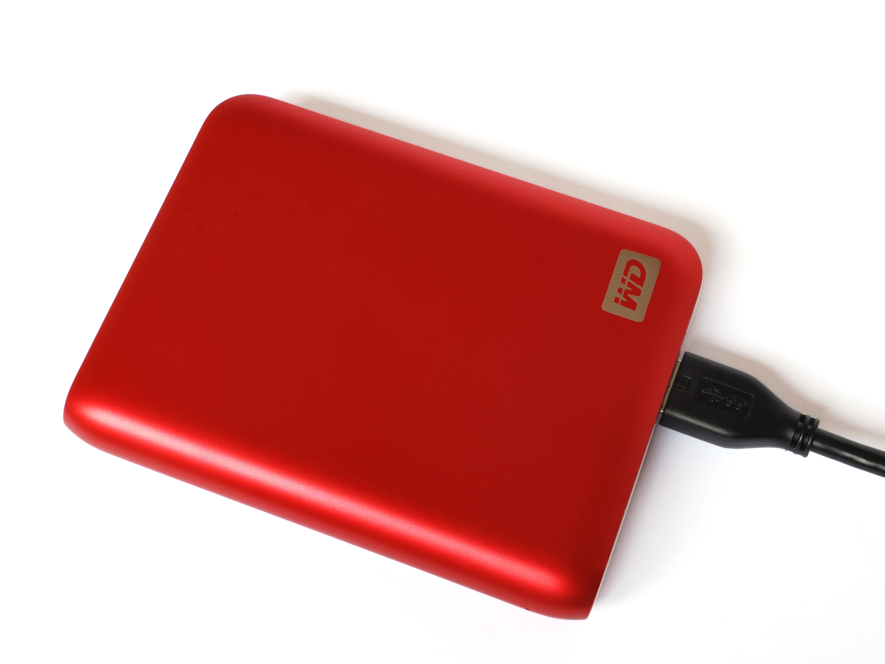
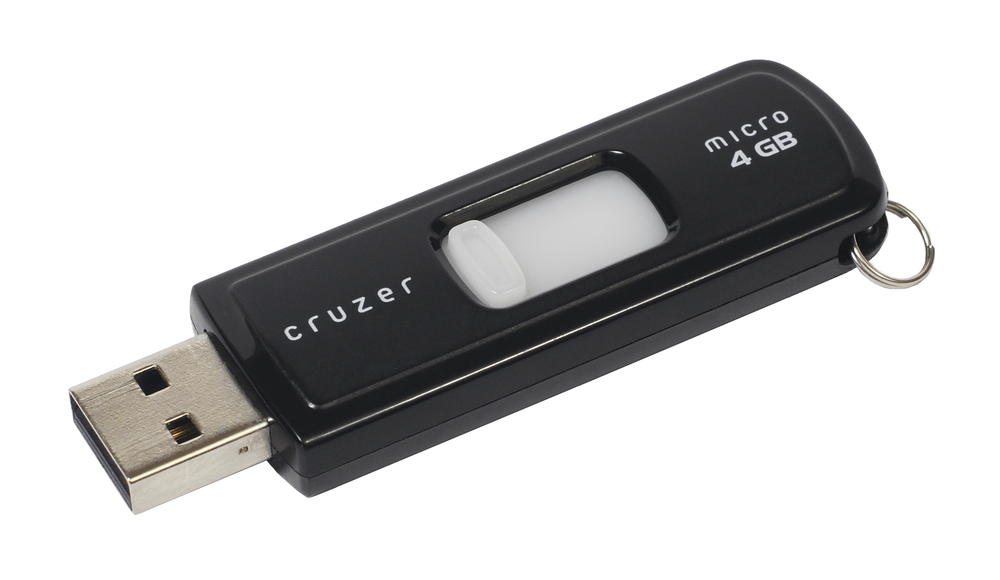

Hardware
-
- Given that both hard disk drives and solid-state drives are situated inside the computer, we could also resort to external storage devices, such as portable hard disk or solid-state drives, or such transportable plug-and-play devices as a USB flash drive and an optical disc (CD, DVD, Blu-ray, etc.)

External Hard Drive. Harke, CC BY-SA 3.0, via Wikimedia Commons.

USB Flash Drive. Evan-Amos, Public domain, via Wikimedia Commons.
Optical Compact Disk (CD). Original uploader: Sakurambo, CC BY-SA 2.5, via Wikimedia Commons.
 These notes by Miriam Briskman are licensed under CC BY-NC 4.0 and based on sources.
These notes by Miriam Briskman are licensed under CC BY-NC 4.0 and based on sources.